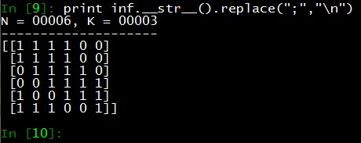
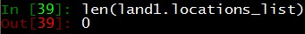
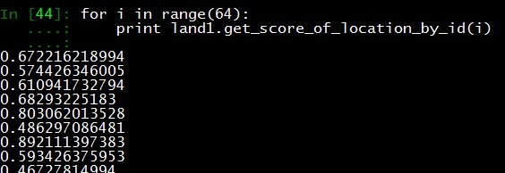
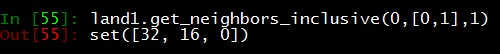
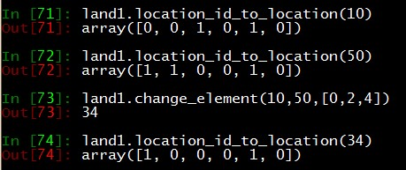
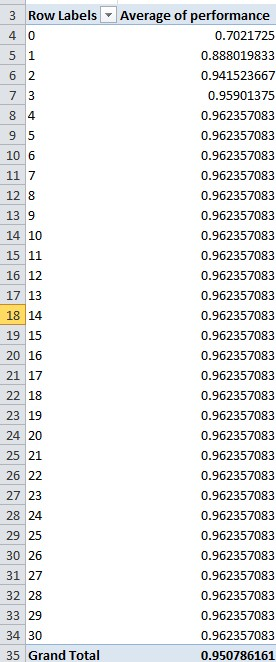

Tutorial¶
Dependency¶
under construction
How to Construct an Influence Matrix¶
First, let’s open a text editor. Input the following characters. The mark ‘x’ means interdependency.

Save the file as “n16k15.txt”.
Note
n16k15 represents, N=16 (the number of configuration elements) and K=15 (the number of interdependency)
>>> from landscape import construct_influence_matrix_from_file
>>> inf = construct_influence_matrix_from_file('n16k15.txt',markchr='x')
>>> print inf.__str__().replace(";","\n")
You can see the following result.

How to Construct a Fitness Contribution Table¶
A fitness contribution table needs an influence matrix. Since we already have one, let’s create our fitness contribution table by typing as:
>>> from landscape import FitnessContributionTable
>>> fit1 = FitnessContributionTable(inf)
If you want to generate an influence matrix programmatically, it is better to use a list object as following.
>>> from landscape import construct_influence_matrix_from_list
>>> from landscape import FitnessContributionTable
>>> im_list = [[1,1,1,1,0,0],[1,1,1,1,0,0],[0,1,1,1,1,0],[0,0,1,1,1,1],[1,0,0,1,1,1],[1,1,1,0,0,1]]
>>> inf = construct_influence_matrix_from_list(im_list)
>>> fit1 = FitnessContributionTable(inf)
Let’s confirm the result.
The result is identical when we use the following form as a text file.

You can copy the influence matrix once the fitness contribution table is created.
>>> import copy
>>> inf_copy = copy.deepcopy(fit1.influence_matrix)

Let’s examine properties of the influence matrix. You can call the following properties for use.
- my_N : the number of configuration elements
- my_K : the number of interdependency
- my_raw_matrix : a raw matrix as a numpy.ndarray object
- my_dependence_matrix : a dependence matrix as a numpy.ndarray object
The following screenshot shows an example.

Note
The first index of a dependence matrix is 0. In the example above, the second row indicates that interdepencies are found in 1st, 3rd and 4th location (each corresponding to 0, 2, and 3).
Fitness values in the fitness contribution table are generated randomly. Let’s type the following code to observe the result.
>>> fit1.my_table.shape
It should be noted that my_table is a numpy.ndarray object. If you need more information on how to handle numpy.ndarray, please visit NumPy ndarray .

The dimension of the fitness table is 6 (= the number of elements) by 2 by 8 ( \(2^3=8\) (= the number of interdependency)).
Let’s observe values.

Also, you can use a method to get the value.
>>> fit1.get_value_of(0,0,2)
How to Draw a Landscape¶
A landscape is a key element for developing a NK Landscape simulator. Simply, you can create an object of Landscape as following:
>>> from landscape import Landscape
>>> land1 = Landscape(fitness_contribution_matrix = fit1)
Currently, we do have location IDs. To make agents search locations, those IDs are made priorly.
>>> land1.compute_all_locations_id()
Note that \(2^6 = 64\).
To obtain a fitness value for a specific location ID, you can use the method “get_score_of_location_by_id()” . For example,
>>> land1.get_score_of_location_by_id(0)
The following screenshot shows another example.
Note that every location is defined by a combination of binary expressions. We can exactly retrieve it by using the method, “location_id_to_location()” . For example,
>>> land1.location_id_to_location(63)
The following screenshot shows another example.

Let’s assume that we want to change only one element in a configuration. For example, we want to flip the second element of \(0, 0, 1, 1, 0, 1\). The location ID is \(2^3+2^2+1 = 13\). The result should be \(0, 1, 1, 1, 0, 1\), such that the result ID is \(2^4+2^3+2^2+1 = 29\).
>>> land1.toggle_element_in_location_id(13,1)
Note
Note that the first index starts with zero(=0).
See also the following screenshot.

Searching neighbors is one of our primary concerns. Landscape provides a convenient method to get it done. For example, let’s say we want to search all neighbors of a location ID(=0) in terms of the first and the second configuration element.
>>> land1.get_neighbors_inclusive(0,[0,1],1)
The first argument of “get_neighbors_inclusive” is location ID. The second is a list of element indices. The last one is processing power.
The result is:
If processing power increases to 2, then the program considers a set of two configuration elements as well.
>>> land1.get_neighbors_inclusive(0,[0,1],2)
The result is:

Let’s suppose that an agent wants to imitate a part of configuration from a target agent. You can use the method “change_element()” in this case.
>>> land1.change_element(10,50,[0,2,4])
The agent (ID=10) wants to copy a part of configuration (e.g., 1st, 3rd and fifth) of another agent (ID = 50).
Observe the following screenshot.
Agent¶
An agent is an autonomous entity who searches better fitness values in a given landscape. To create a customized agnet for your simulation, inherit Agent class first.
from agent import Agent
class Student(Agent):
def __init__(self, my_id, my_clan):
Agent.__init__(self,my_id=my_id,my_clan=my_clan)
self.plans = [[0,1,2,3,4,5]]
Let’s save it as myagent.py .
We inherit Agent class and set a plan as full search (i.e., the agent view every neighbor who has different element from 1st to 6th one).
Note
self.plans = [[...]] can have differnt forms. For example, self.plans = [[0,1,2],[3,4,5]] or self.plans = [[0,1],[2,3],[4,5]] .
Agent Clan¶
An agent clan is a group of agents who search better fitness values in a given landscape.
>>> from agent import AgentClan
>>> from myagent import Student # myagent.py should be included in the same directory.
>>> aclan = AgentClan(land1, 1, Student, 100)
- parameter 1(=land1): a landscape object
- parameter 2(=1): processing power (see also, Landscape.get_neighbors_inclusive() method)
- parameter 3(=Student): an agent model
- parameter 4(=100): the number of agents in a group.
Let’s call them “students”.
>>> aclan.name_called("students")
Now, let’s assign 100 students to the agent clan.
>>> aclan.hatch_members()
Run Simulator¶
To run a simulation, we need to define three things.
- Plan
- Behavior
- Simulator
Plan refers to a way of managing the simulation process. We have a simple but useful class for standard Plan, “AdapterPlan”. If you need to define your own simulation plan, create your own plan based on AdapterPlan.
Behavior refers to a searching strategy of agent. You can also define your own types of behavior. Currently, we deploy two basic search behaviors: greed search and adaptive search. You can find the AdapterBehaviorGreed class and the AdapterBehaviorAdaptive in strategy.py .
Simulator is a body of your simulator. You have to put an agent clan to initiate it. To run a simulation, input a target time tick, Plan and Behavior. In addition, all results of your simulation is stored in the simulator object.
Let’s observe an example.
>>> import strategy
>>> import simulator
>>> sim1 = simulator.Simulator(aclan)
>>> sim1.run(30, simulator.AdapterPlan, strategy.AdapterBehaviorGreed)
We run the first simulation by setting up 30(=time tick), AdapterPlan and AdapterBehaviorGreed.
Let’s experiment 19 times more.
>>> for _ in xrange(19):
sim1.run(30, simulator.AdapterPlan, strategy.AdapterBehaviorGreed)
For the same simulator object, the result of each simulation is accumulated.
To export the result, you can run the following command.
>>> sim1.export_record('test_exp_greed.txt')
At this time, we are going to use AdapterBehaviorAdaptive as Behavior.
>>> sim2 = simulator.Simulator(aclan)
>>> for _ in xrange(20):
sim2.run(30, simulator.AdapterPlan, strategy.AdapterBehaviorAdaptive)
>>> sim2.export_record('test_exp_adaptive.txt')
Note
We are going to update how to write customized adapters soon.
Read the Simulation Results by Excel¶
If you have a spreadsheet application, exported data can be easily handled by using a pivot function. Let’s assume that we have Microsoft Excel.
For Libre Office users, see the following link: Creating Pivot Table

Click “From Text” to import “test_exp_greed.txt”.
Let’s label the first row as “tick” and “performance”, and import data from the second row. You may have the similar screen as we have now.

Select everything and click the “PivotTable” and the Insert Tab.

Set Average of performance as Values, and set tick as Row Labels.
Now, you may see this.
Repeat the abovementioned process with “test_exp_adaptive.txt”.